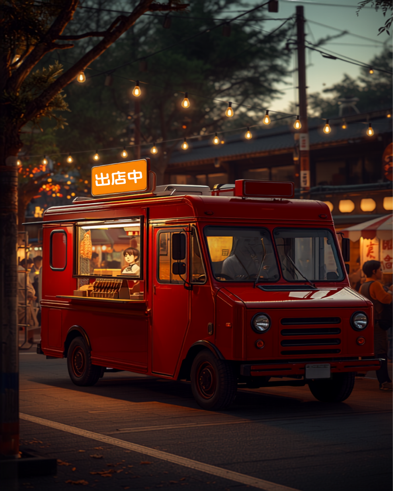

平日はテイクアウト専門店で営業。焼きたてをその場で。
週末はキッチンカーで移動販売。桜まつり・スポーツイベントに出没。
蚤の市やお祭りにも出店。トルコのジュースも一緒にどうぞ。
「この前イベントで食べたケバブ、また食べたい」——その"また"に、ここで会えます。
「レギュラーはちょっと小さいので断然ラージがおすすめ」——常連さんの総意です。チキンかビーフ、辛さは3段階から選べます。肉も野菜も、遠慮なくたっぷり。
サクッと食べたい人に。それでも野菜はしっかり入っています。
食べ応え重視ならこっち。肉の満足感がまるで違います。
みんなコレ頼んでますGoogleクチコミより実際の言葉を引用しています。
ケバブ肉がたっぷり詰まったピタパンはキャベツとの相性もバツグン。食べ応えありのケバブサンドです。
チリマヨソースにキャベツ、トマト、玉ねぎ、チキンが挟んであり、辛さもそんなにないので小学生以上なら子どもでも美味しくいただけます。トルコ料理独特のチリパウダーの風味が良いです。
たっぷりボリュームがあるケバブサンドがお安く食べられるお店。肉の種類も辛さも選べる。お店のお兄さんたちもフレンドリーで話しやすかった。トルコのジュースも美味しかった。
現金の他、クレジット決済やPayPayタッチ決済できます。博多の森に来ていたキッチンカーでケバブサンドを頂きました。

最新の出店スケジュールはInstagramで告知中。フォローしておけば、あの味を逃しません。
出店スケジュールを確認する